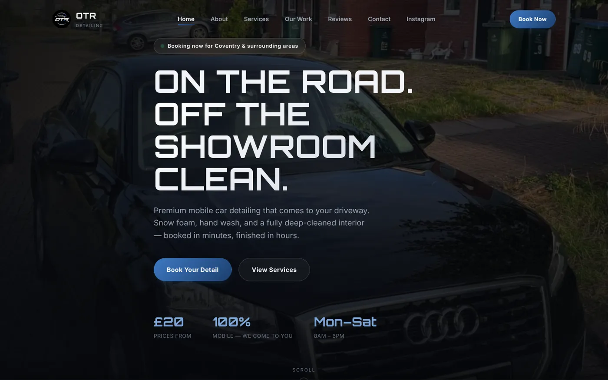
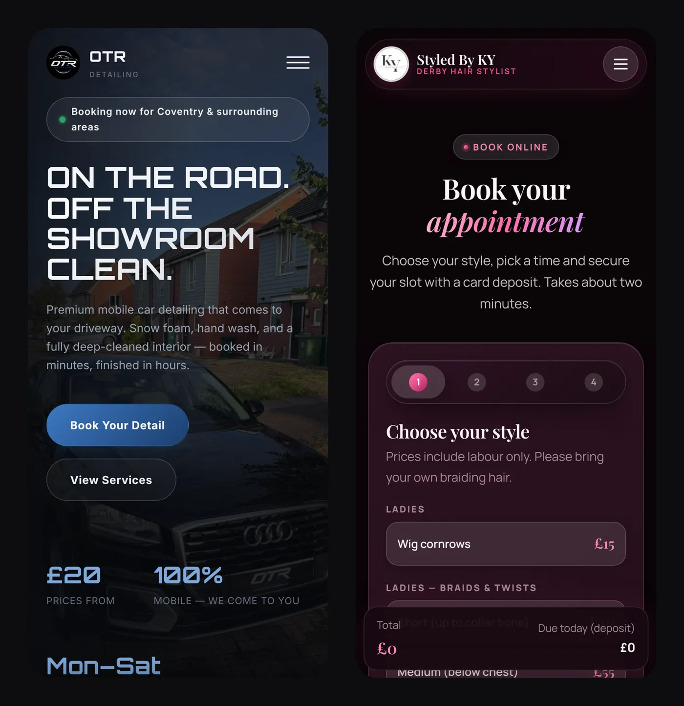

What a Mobile Car Valeting Website Needs (Real UK Example)

It's Saturday morning. Someone's just looked at their car after a week of school runs, a dog and a McDonald's drive-through, and decided enough is enough. They search "mobile car valeting near me" with one hand and hold a cold coffee with the other.
They'll pick whoever answers their questions fastest, not whoever has the best logo.
This post walks through what a mobile valeting website actually needs, using a real one: the site we built for OTR Detailing, Gideon's one-man mobile valeting business in Coventry.
Answer three questions before anyone scrolls
People looking for a valet want to know three things: how much, do you come to me, and are you any good. Everything else is a bonus.
OTR Detailing's homepage answers all three on the first screen. The headline says what the business is about, a badge says "Booking now for Coventry & surrounding areas", and underneath sit three plain facts: prices from £20, 100% mobile, Monday to Saturday from 8am to 6pm.
The photo behind it is Gideon's own work, a clean black car on a real street with real wheelie bins in the background. That matters more than you'd think. A customer sees it and thinks "he'll do that on my drive", which is exactly the thought you want them to have.
There are two buttons: "Book Your Detail" and "View Services". No carousel of five slides, no "Welcome to our website".
Put your packages and prices on the page
Valeting is one of the easiest trades to price online, and one of the worst for hiding prices in the DMs. Most jobs fall into a handful of packages, so show them.
Gideon has three:
- Exterior Clean, £20: pre-wash, snow foam, two-bucket contact wash, wheels, tyres, arches, glass and door shuts, dried with a microfibre towel.
- Interior Clean, £30: full vacuum and interior clean, door panels, steering wheel, pedals, interior windows and mirrors, vents, and deodorising.
- Full Interior & Exterior, £40: everything in both, marked "Most popular", with priority slot scheduling.

Two things make this work. First, every package lists exactly what's included, so "full valet" stops being a mystery phrase that means something different to every valeter in the West Midlands. Second, each card has its own booking button, so the customer goes straight from "that one" to booking it.
If some jobs genuinely cost more (a 7-seater, heavy pet hair, a car that's been used as a mobile wardrobe since 2019), say so in one line under the prices. Something like "Larger vehicles and heavy pet hair may cost more. We'll always confirm the price before we start." That's honest, and it stops the awkward conversation on the driveway. Our post on why "DM for price" costs you customers has more on pricing jobs that vary.
Let your own photos do the selling
Valeting is visual. Before and after shots are your best salesperson, and they work for free.
OTR Detailing's site has an "Our Work" section built from Gideon's own photos of real customers' cars, plus his video reels. No stock photo of a supercar he's never touched. Show someone a family hatchback looking better than the day it left the factory, and that's worth more than any sentence you could write.
What to show:
- Before and after pairs, shot from the same angle in the same light.
- The boring cars as well as the flash ones. Most customers drive family hatchbacks, so show them one.
- Interiors. A clean seat after a dog has lived on it sells interior valets better than any list.
You don't need a camera. Our guide on taking photos of your work with a phone covers light, angles and the wheelie bin problem.
Say exactly where you'll turn up
You're mobile, so you don't have a shop address to put on Google Maps. Your website has to do that job instead: tell people, in words, which areas you cover.
"Coventry and surrounding areas" is a good start. A list of the actual towns and areas is even better, because that's what people type into Google, and it saves a customer in a nearby town from having to ask.
Here's how that looks on one of our concept sites (a demo, not a real business):

Only list places you'll really go. If you put down a town that's 40 minutes away and then turn the job down, you've wasted their time and yours.
Make booking the easy bit
Look at the OTR Detailing site and count the booking buttons. There's one in the header, one on the homepage, and one on every package. Wherever a customer decides they're ready, the button is right there.
Your site should also answer the practical questions customers worry about before they book a mobile valet:
- What do you need from me? If you need access to a tap or a plug, or you bring your own water and power, say so.
- How long does it take? Rough times per package help people plan their day.
- What if it rains? Tell them what happens, whether that's working through it or moving the slot.
- How do I pay? Card, cash, bank transfer, deposit or no deposit.
Each answer is one fewer message to reply to with wet hands. If you're weighing up a full online booking system, our post on whether you need a booking system covers when it's worth it.
Build for the phone first
Plenty of people book a valet on their phone, often while standing right next to the dirty car. So the phone version isn't a squashed copy of the desktop site. It's the main event.

On a phone, OTR Detailing's homepage still shows the area, the booking button and the starting price before you scroll. Big buttons, short lines, nothing you need to pinch and zoom to read.
Show real reviews, and keep the admin small
OTR Detailing has a reviews page. Behind the scenes, Gideon has a private booking manager where he can keep track of bookings and customers, and approve genuine reviews before they appear on the site, including the less glowing ones.
That last bit matters. A wall of perfect, nameless five-star reviews looks made up, because it often is. Our guide on showing reviews on your website honestly covers the UK rules.
One honest note: OTR Detailing's site is recent, so we don't have booking or enquiry figures to share yet, and we won't invent any. You can read the full story in our case study on OTR Detailing and Styled By KY.
Do this today
You can start on most of this without a new website:
- Write down your packages and exactly what each one includes. If you can't explain the difference in one line, neither can your customers.
- Put a price on each one, even if it's a "from" price, with one line on what makes it go up.
- List the towns you actually cover.
- Pick your best 10 before and after photos and delete the blurry ones.
- Write down the five questions people message you most, and answer them in a pinned post or highlight.
- Check your Instagram bio and Google profile say what you do, where, and how to book.
Where we come in
We build valeting and detailing websites as fixed-price packages: £350, £600 or £800, paid once, with optional hosting and support from £10 a month. Full details are on our services and prices page, and you can see OTR Detailing and our other builds on our work page.
Not sure what you need yet? Get a free website audit and we'll tell you plainly what we'd change first.
FAQ
How much does a website for a car valeting business cost?
It varies a lot by who builds it. Our websites are fixed prices of £350, £600 or £800, paid once, with optional hosting and support at £10 a month or £100 a year.
Should a mobile valeter put prices on their website?
Yes, at least for your main packages. Fixed or "from" prices with a clear list of what's included answer the first question most customers have, and a line about larger cars or pet hair covers the jobs that cost more.
Do I need online booking for a valeting business?
Not always. If you're happy taking bookings by phone or message, clear prices and a big contact button may be enough. If you're losing time to back-and-forth messages about dates, online booking is usually worth it.
How do I get my mobile valeting business on Google without an address?
Set up a Google Business Profile as a service-area business with your home address hidden, then list the areas you cover on both your profile and your website. Our Google Maps guide walks through it step by step.
Run a valeting or detailing business?
Send us your Instagram or your current site and we'll tell you what we'd put on the homepage first. The audit is free and there's no hard sell.